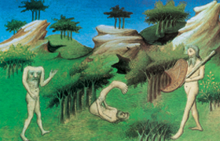

Lezione 9  Prima globalizzazione Europea
Prima globalizzazione Europea

Marco Polo era figlio di un mercante veneziano, Niccolò. A diciassette anni, nel 1271, partì insieme al padre e allo zio verso l’Oriente, visitò l’Iran, l’Afghanistan, il Tibet, la Cina e Pechino, allora quasi sconosciuti in Europa. Visse alla corte dell’imperatore dei tartari, il Gran Khan Kubilai, e ne diventò il consigliere.
Tornò a Venezia dopo venticinque anni, nel 1295, e dopo qualche anno, finito in carcere nel corso di una guerra con i genovesi, dettò il suo libro al pisano Rustichello.
Il Milione ebbe immediato successo.
«Imperatori e re, duchi e marchesi, conti, cavalieri e borghesi, o voi, chiunque siate, che volete conoscere le varie razze umane e le singolarità delle diverse regioni del mondo, prendete questo libro e fatevelo leggere. Troverete qui tutte le immense meraviglie, tutte le grandi singolarità delle grandi contrade d’Oriente – della Grande Armenia e della Persia e della Tartaria e dell’India e di cento altri paesi – da noi notate con chiarezza e con ordine come le raccontò messer Marco Polo, detto Milione, savio e nobile cittadino di Venezia, per averle vedute coi proprii occhi. Qualcosa vi sarà, è vero, ch’egli non vide: ma gli fu riferita da uomini degni di fede. E siccome daremo le cose viste per viste e le udite per udite, il nostro libro resterà giusto e veritiero, senza nessuna menzogna.
Chiunque legga od ascolti questo libro gli creda, poiché tutto vi è vero. Dovete infatti sapere che fino ad oggi, da quando Iddio Signor Nostro plasmò colle sue mani il nostro primo padre Adamo, non ci fu mai nessuno, né cristiano, né pagano, né tartaro, né indiano, né d’altra razza che si voglia, che abbia conosciuto ed esplorato delle diverse parti del mondo, e delle sue grandi meraviglie, quanto ne esplorò e ne conobbe questo messer Marco. Per questo è parso a lui troppo gran iattura non far mettere per iscritto tutte le grandi meraviglie vedute od udite vere, affinché le conoscano anche gli altri che non le hanno né viste né sapute.
E dovete notare che per saper tante cose stette ben ventisei anni per quelle contrade. Essendo poi prigioniero nelle carceri di Genova, fece esporre tutte queste cose a maestro Rustichello da Pisa, che si trovava in quelle stesse carceri, negli anni di Cristo 1298.
E non segnò che una piccola parte delle cose apprese: quelle presenti alla memoria».
(Il libro di messer Marco Polo, cittadino di Venezia detto Milione dove si raccontano le meraviglie del mondo, ricostruito criticamente e per la prima volta integralmente tradotto in lingua italiana da Luigi Foscolo Benedetto, Milano, Treves, 1932, pp.1-2)